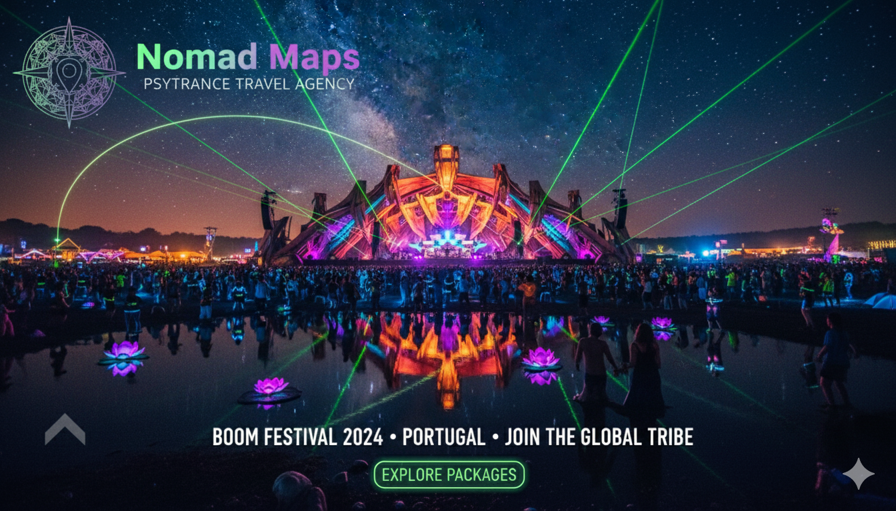

Próximas Jornadas

Agencia Especializada em Festivaais de Arte e Cultura Visionária pelo mundo, onde o Psytrance é o elo que nos une e nos movimenta pelo globo! Curadoria de Experiências..
EXPLORE AS JORNADAS"Não somos turistas, somos nômades da alma. Especializados em viagens para festivais de arte e cultura visionária."
Curadoria de experiências que transformam. Da logística à imersão cultural, sua única preocupação é dançar.